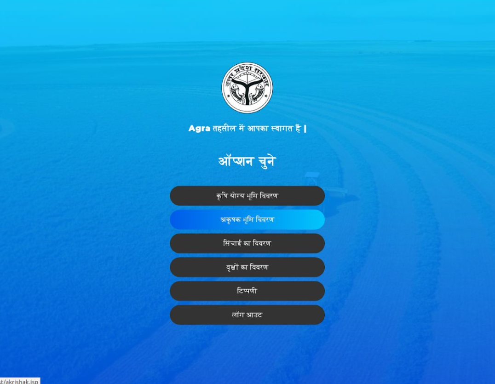
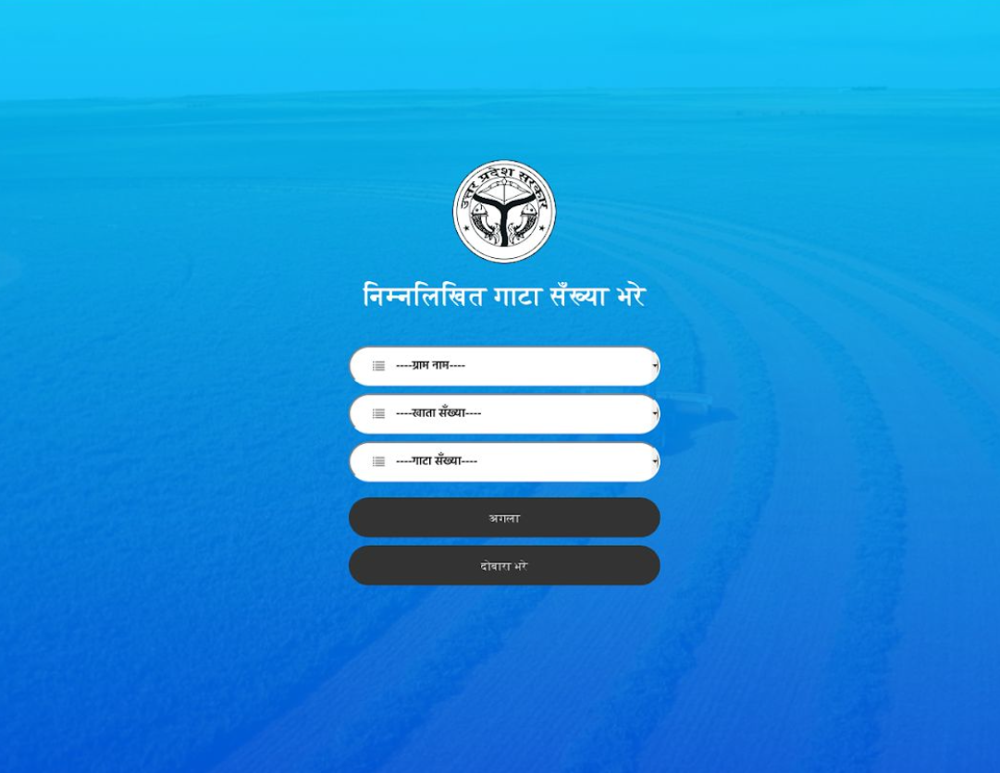
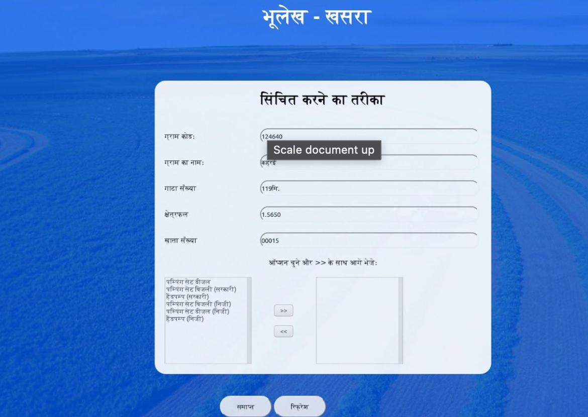
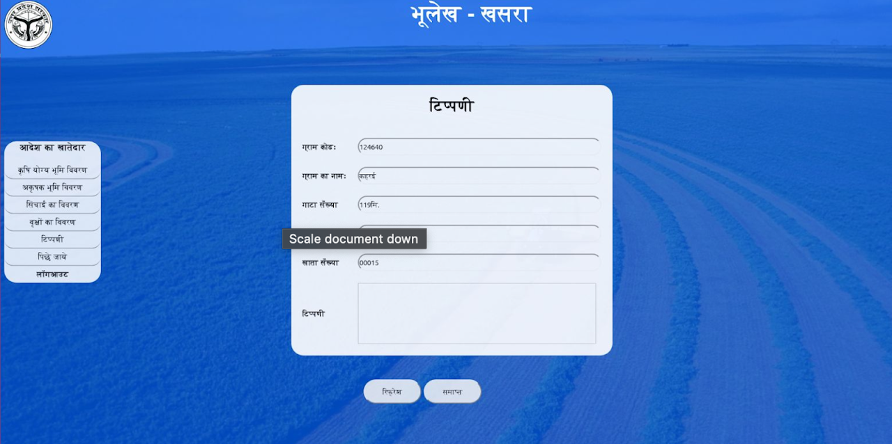
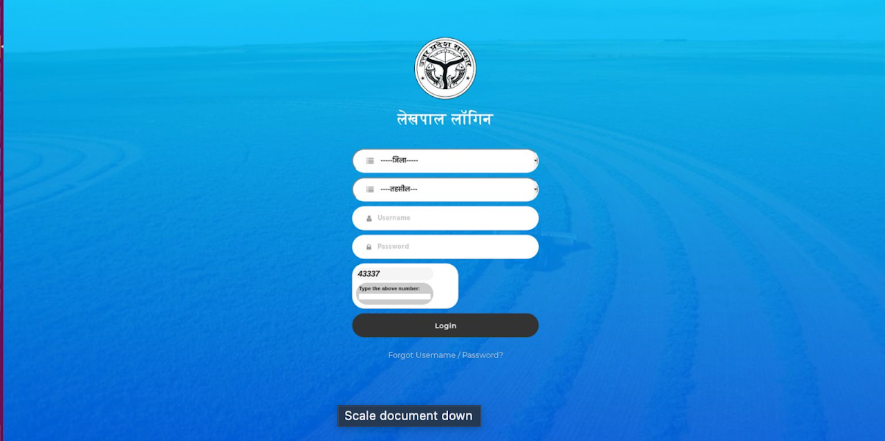
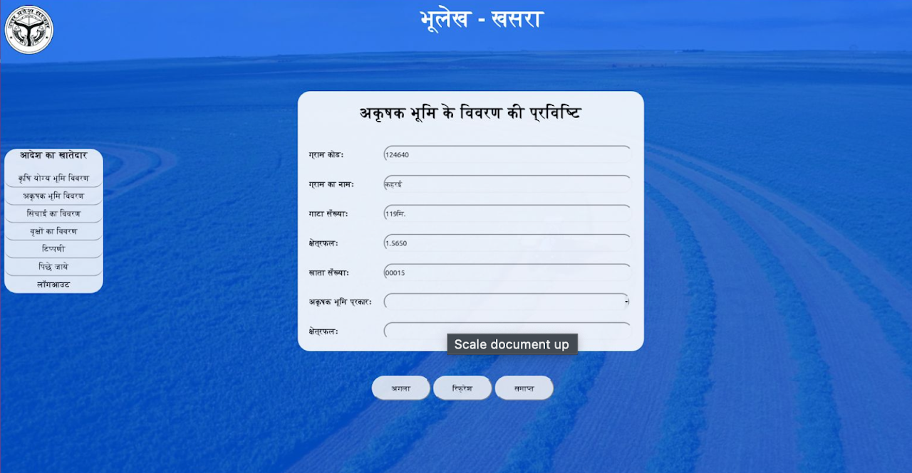
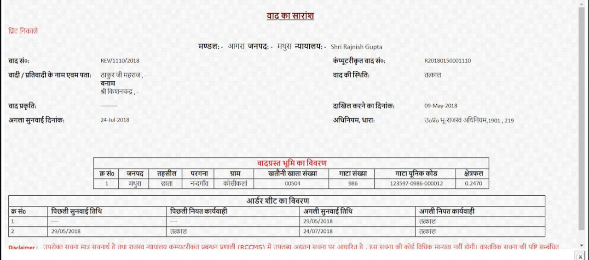
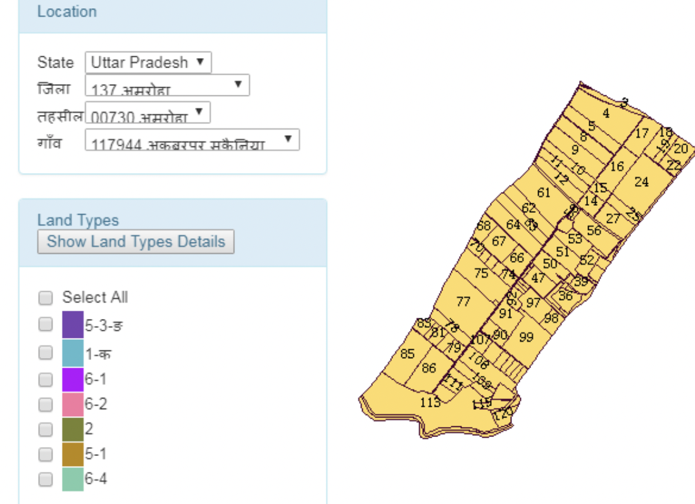

The best way to see how we did it is simple, the project is deployed by the government and it can be found here http://upbhulekh.gov.in/khasra/ Terabytes of citizen data.
Since it as an administrative site, used by the government and under strict control of the National Informatics Center, I can showcase only the interface that we made on the local machine after the login as administrators back then. The code is proprty of the NIC after the project. The project dealt with digitising land revenue collection mechanism for the agricultural plots of the state. Uttar Pradesh being an agrarian state, has a lot of farmers and people's livelihoods depends on it. The project had a direct impact on them. It deals with approximately 23.8 million copies of uniquely referenced plot codes, ways to correct for and dispute land areas, croping pattern and vegetation analysis and maps for the general public and administrators alike. All the data is encrypted using MD5. Since the language of the state is predominantly hindi, for the ease of use by the general public and administrators alike, we made it in Hindi! What can be seen after login ->
Simplified UI for the administrators to go through the different aspects of land revenue management
       Descriptions of the screens in order:
1.Details for irrigtaion scheme deployed by the farmer
2.Any specific issues the farmer wants to be raised and corrected, this is reported to the concerned department for civil cases
3.Details on crop planted, productive and barren land, linking with the location in village and specific plot of land
4.Internal login interface for the district level land revenue authority
5.Details required for the barren part of the plot and its characterisitics
6.Revenue cases, details filled up automaticaly. The case is passed in this form from the highest court of the state to lower court. The project helped reduce turnaround time from 3 weeks to 2 days
8.The digitized land, uniquely referenced, synced to google maps api